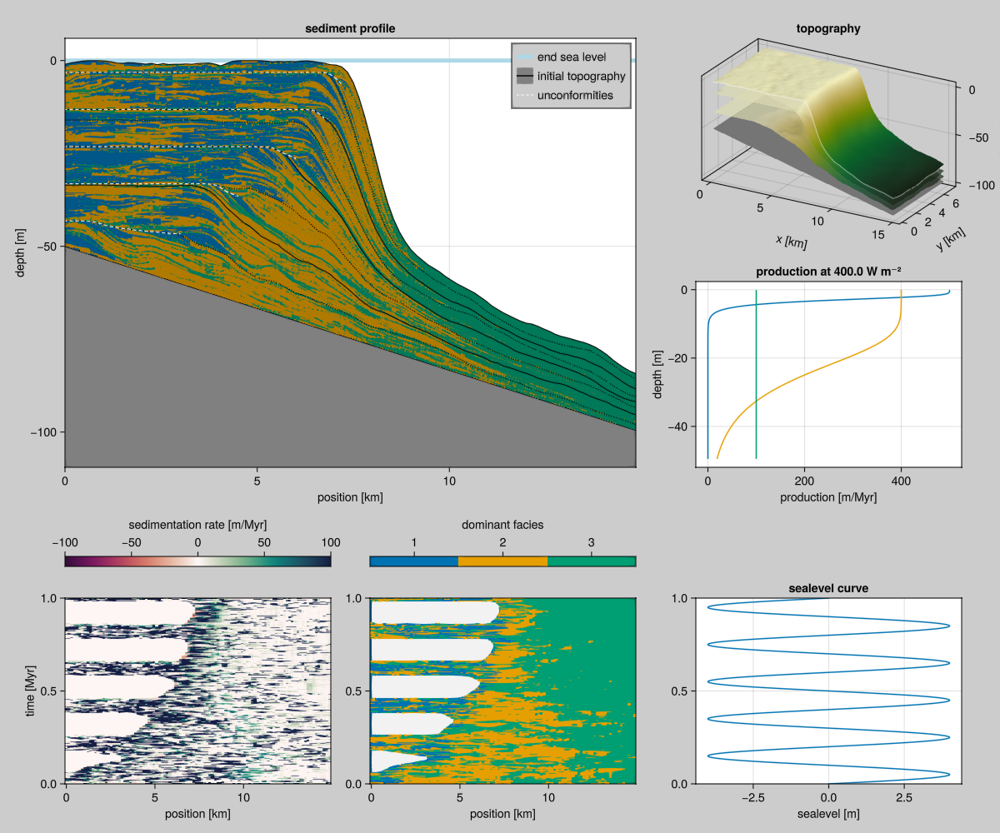

Model with CA, Production and Active Layer transport (ALCAPS)
The following Sedimentation model includes the Burgess 2013 Cellular Automaton, Bosscher & Schlager 1992 Production curves and an Active Layer transport model, based on Paola 1992, henceforth ALCAPS.

Example Input
The following is a complete example input.
⪡alcap-example-input⪢≣
const TAG = "alcap-example"
const FACIES = [
ALCAP.Facies(
viability_range=(4, 10),
activation_range=(6, 10),
maximum_growth_rate=500u"m/Myr",
extinction_coefficient=0.8u"m^-1",
saturation_intensity=60u"W/m^2",
diffusion_coefficient=10000u"m"),
ALCAP.Facies(
viability_range=(4, 10),
activation_range=(6, 10),
maximum_growth_rate=400u"m/Myr",
extinction_coefficient=0.1u"m^-1",
saturation_intensity=60u"W/m^2",
diffusion_coefficient=5000u"m"),
ALCAP.Facies(
viability_range=(4, 10),
activation_range=(6, 10),
maximum_growth_rate=100u"m/Myr",
extinction_coefficient=0.005u"m^-1",
saturation_intensity=60u"W/m^2",
diffusion_coefficient=7000u"m")
]
const PERIOD = 0.2u"Myr"
const AMPLITUDE = 4.0u"m"
const INPUT = ALCAP.Input(
tag="$TAG",
box=Box{Coast}(grid_size=(100, 50), phys_scale=150.0u"m"),
time=TimeProperties(
Δt=0.0002u"Myr",
steps=5000,
write_interval=1),
ca_interval=1,
bedrock_elevation=(x, y) -> -x / 300.0,
sea_level=t -> AMPLITUDE * sin(2π * t / PERIOD),
subsidence_rate=50.0u"m/Myr",
disintegration_rate=50.0u"m/Myr",
insolation=400.0u"W/m^2",
sediment_buffer_size=50,
depositional_resolution=0.5u"m",
facies=FACIES)file:examples/model/alcap/run.jl
#| requires: src/Model/ALCAP2.jl
#| creates: data/output/alcap-example.h5
module Script
using Unitful
using CarboKitten.Components
using CarboKitten.Components.Common
using CarboKitten.Model: ALCAP2 as ALCAP
using CarboKitten.Export: data_export, CSV
const PATH = "data/output"
<<alcap-example-input>>
function main()
H5Writer.run(Model{ALCAP}, INPUT, "$(PATH)/$(TAG).h5")
data_export(
CSV(tuple.(10:20:70, 25),
:sediment_accumulation_curve => "$(PATH)/$(TAG)_sac.csv",
:age_depth_model => "$(PATH)/$(TAG)_adm.csv",
:stratigraphic_column => "$(PATH)/$(TAG)_sc.csv",
:metadata => "$(PATH)/$(TAG).toml"),
"$(PATH)/$(TAG).h5")
end
end
Script.main()Plotting code
file:examples/model/alcap/plot.jl
#| creates: docs/src/_fig/alcaps-alternative.png
#| requires: data/output/alcap-example.h5
#| collect: figures
using GLMakie
using CarboKitten.Visualization
save("docs/src/_fig/alcaps-alternative.png", summary_plot("data/output/alcap-example.h5"))Modular Implementation
file:src/Model/ALCAP/Example.jl
module Example
using Unitful
using CarboKitten.Model: ALCAP2 as ALCAP
using CarboKitten.Boxes: Box, Coast
using CarboKitten.Config: TimeProperties
<<alcap-example-input>>
endfile:src/Model/ALCAP2.jl
# FIXME: rename this to ALCAP and remove old code
@compose module ALCAP2
@mixin Tag, H5Writer, CAProduction, ActiveLayer
using ..Common
using ..CAProduction: production
using ..TimeIntegration
using ..WaterDepth
using ModuleMixins: @for_each
using .H5Writer: run
export Input, Facies
function initial_state(input::Input)
ca_state = CellularAutomaton.initial_state(input)
for _ in 1:20
CellularAutomaton.step!(input)(ca_state)
end
sediment_height = zeros(Height, input.box.grid_size...)
sediment_buffer = zeros(Float64, input.sediment_buffer_size, n_facies(input), input.box.grid_size...)
return State(
step=0, sediment_height=sediment_height,
sediment_buffer=sediment_buffer,
ca=ca_state.ca, ca_priority=ca_state.ca_priority)
end
function step!(input::Input)
step_ca! = CellularAutomaton.step!(input)
disintegrate! = disintegration(input)
produce = production(input)
transport = transportation(input)
function (state::State)
if mod(state.step, input.ca_interval) == 0
step_ca!(state)
end
p = produce(state)
d = disintegrate!(state)
active_layer = p .+ d
sediment = transport(state, active_layer)
push_sediment!(state.sediment_buffer, sediment ./ input.depositional_resolution .|> NoUnits)
state.sediment_height .+= sum(sediment; dims=1)[1,:,:]
state.step += 1
return H5Writer.DataFrame(
production = p,
disintegration = d,
deposition = sediment)
end
end
function write_header(fid, input::AbstractInput)
@for_each(P -> P.write_header(fid, input), PARENTS)
end
include("ALCAP/Example.jl")
end